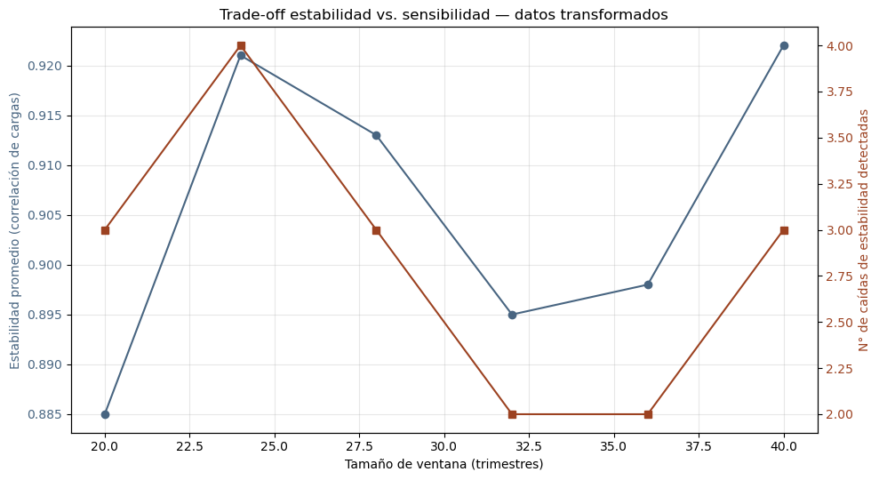
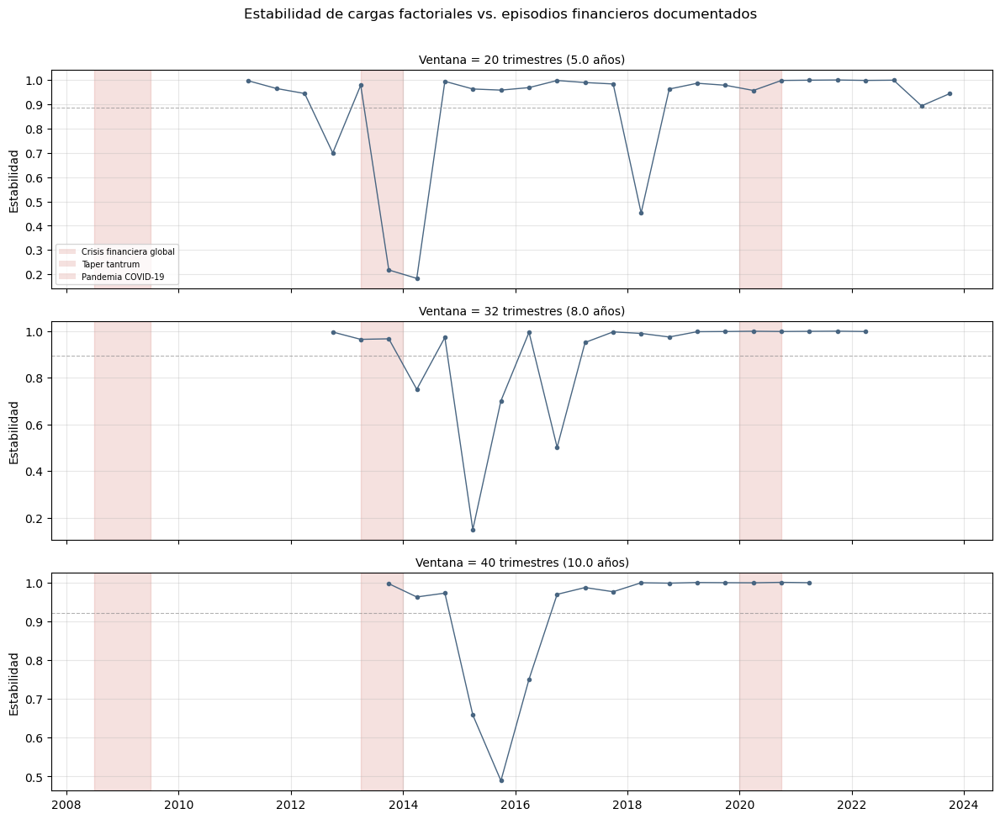

Tesis: Medición del ciclo financiero en Perú mediante técnicas de reducción dimensional y machine learning
Objetivo de este notebook: justificar empíricamente el tamaño de ventana móvil que se usará en 06_epca.ipynb, mediante un análisis de sensibilidad (no un hiperparámetro optimizado contra una etiqueta, ya que no existe un ground truth de regímenes conocidos).
Criterio operacionalizado directamente desde el marco conceptual (sección 2.4 y 6.4): - Estabilidad temporal: correlación entre cargas factoriales de ventanas sucesivas (familia de evidencia “factorial”). - Sensibilidad: número de caídas de estabilidad (posibles transiciones) detectadas a lo largo de la serie. - Validación externa: si las caídas de estabilidad coinciden con episodios financieros documentados (crisis 2008-2009, taper tantrum 2013, pandemia 2020) – ver criterio de interpretabilidad, sección 6.1.
No modifica ningún archivo de data/processed/ – solo lee.
import osos.chdir('..') if os.path.basename(os.getcwd()) =='notebooks'elseNoneimport pandas as pdimport numpy as npimport matplotlib.pyplot as pltfrom sklearn.preprocessing import StandardScalerfrom sklearn.decomposition import PCAdf_transf = pd.read_csv('data/processed/dataset_estandarizado_trimestral.csv', index_col=0, parse_dates=True)df_niveles = pd.read_csv('data/processed/dataset_niveles_estandarizado_trimestral.csv', index_col=0, parse_dates=True)print(f'Transformado: {df_transf.shape[0]} trimestres x {df_transf.shape[1]} variables')print(f'Niveles: {df_niveles.shape[0]} trimestres x {df_niveles.shape[1]} variables')# Episodios financieros documentados, para validacion externa (no como "verdad# absoluta", sino como referencia de contraste visual)EPISODIOS = {'Crisis financiera global': ('2008-07-01', '2009-06-30'),'Taper tantrum': ('2013-04-01', '2013-12-31'),'Pandemia COVID-19': ('2020-01-01', '2020-09-30'),}
Transformado: 72 trimestres x 18 variables
Niveles: 73 trimestres x 20 variables
2. Función de análisis de sensibilidad por tamaño de ventana
Para cada tamaño de ventana w: 1. Se generan sub-ventanas con paso fijo de 2 trimestres (semestral). 2. En cada ventana se re-estandariza localmente y se ajusta PCA (equivalente a un PCA sobre la matriz de correlación de esa ventana, consistente con el enfoque de Camiz, Maulucci & Roig, 2010). 3. Se compara la carga factorial del componente de interés entre ventanas sucesivas (alineando el signo, ya que el signo de un componente principal es arbitrario). 4. La correlación entre cargas sucesivas es la métrica de estabilidad.
def analizar_ventanas(df, tamanos_ventana, paso=2, componente_interes=0, n_componentes=3):""" componente_interes: indice del componente a rastrear (0 = PC1, 1 = PC2, ...) Util para excluir PC1 en el caso de 'niveles' (contaminado por tendencia, ver 05_pca.ipynb). """ resultados = {}for w in tamanos_ventana: fechas_centro = [] cargas_series = [] inicio =0while inicio + w <=len(df): ventana = df.iloc[inicio:inicio + w] ventana_std = StandardScaler().fit_transform(ventana) pca = PCA(n_components=min(n_componentes, ventana.shape[1]), random_state=42) pca.fit(ventana_std) carga = pca.components_[componente_interes] fechas_centro.append(ventana.index[w //2]) cargas_series.append(carga) inicio += paso# Alinear signo (arbitrario en PCA) respecto a la ventana anterior cargas_alineadas = [cargas_series[0]]for c in cargas_series[1:]: corr_directa = np.corrcoef(c, cargas_alineadas[-1])[0, 1] cargas_alineadas.append(c if corr_directa >=0else-c)# Estabilidad = correlacion entre cargas de ventanas consecutivas estabilidad = [ np.corrcoef(cargas_alineadas[i], cargas_alineadas[i +1])[0, 1]for i inrange(len(cargas_alineadas) -1) ] fechas_estabilidad = fechas_centro[1:] resultados[w] = {'fechas': fechas_estabilidad,'estabilidad': estabilidad,'n_ventanas': len(cargas_series), }return resultados
3. Ejecutar la grilla de tamaños de ventana (datos transformados)
# Grilla acotada por dos limites:# - MINIMO: debe cumplir n > p (p = numero de variables, ~16 en el dataset# transformado) para que la matriz de correlacion no sea singular. Se usa# 20 como piso (n=20 > p=16, con margen minimo), no 16 (n=p, degenerado).# - MAXIMO: ~40 trimestres (10 anios), por debajo de la duracion tipica de un# ciclo financiero completo (Drehmann et al. 2012: 8-20 anios / 32-80 trimestres).# LIMITACION RECONOCIDA: con solo 72 trimestres totales (18 anios) de dataset# final, ninguna ventana de esta grilla alcanza la regla practica de 5-10x p# (80-160 obs.) recomendada por la literatura de analisis multivariado# (Jolliffe, 2002). Se documenta como limitacion de tamano de muestra, no se# oculta ni se fuerza el diseno para evitarla.TAMANOS_VENTANA = [20, 24, 28, 32, 36, 40]PASO =2resultados_transf = analizar_ventanas(df_transf, TAMANOS_VENTANA, paso=PASO, componente_interes=0)for w, r in resultados_transf.items():print(f'Ventana {w} trimestres: {r["n_ventanas"]} ventanas generadas, 'f'estabilidad promedio = {np.mean(r["estabilidad"]):.3f}')
Estabilidad promedio: más alta = ventanas más consistentes entre sí (menos sensible a cambios reales, riesgo de “aplanar” transiciones).
Sensibilidad: número de caídas de estabilidad por debajo de un umbral (promedio - 1 desviación estándar) = posibles transiciones detectadas. Más caídas no es necesariamente mejor – puede ser ruido.
fig, ax1 = plt.subplots(figsize=(10, 5.5))color1 ='#486581'ax1.plot(df_resumen['ventana_trimestres'], df_resumen['estabilidad_promedio'], marker='o', color=color1, label='Estabilidad promedio')ax1.set_xlabel('Tamaño de ventana (trimestres)')ax1.set_ylabel('Estabilidad promedio (correlación de cargas)', color=color1)ax1.tick_params(axis='y', labelcolor=color1)ax1.grid(True, alpha=0.3)ax2 = ax1.twinx()color2 ='#9c4221'ax2.plot(df_resumen['ventana_trimestres'], df_resumen['n_caidas_detectadas'], marker='s', color=color2, label='Caídas detectadas (sensibilidad)')ax2.set_ylabel('N° de caídas de estabilidad detectadas', color=color2)ax2.tick_params(axis='y', labelcolor=color2)plt.title('Trade-off estabilidad vs. sensibilidad — datos transformados')fig.tight_layout()os.makedirs('reports/figures', exist_ok=True)plt.savefig('reports/figures/06a_tradeoff_estabilidad_sensibilidad.png', dpi=150, bbox_inches='tight')plt.show()

5. Validación externa: ¿las caídas de estabilidad coinciden con episodios conocidos?
Se grafica la serie de estabilidad para un subconjunto representativo de tamaños de ventana (menor, intermedio, mayor), marcando los episodios financieros documentados como referencia visual.
tamanos_a_graficar = [TAMANOS_VENTANA[0], TAMANOS_VENTANA[len(TAMANOS_VENTANA)//2], TAMANOS_VENTANA[-1]]fig, axes = plt.subplots(len(tamanos_a_graficar), 1, figsize=(12, 3.2*len(tamanos_a_graficar)), sharex=True)for ax, w inzip(axes, tamanos_a_graficar): r = resultados_transf[w] ax.plot(r['fechas'], r['estabilidad'], marker='o', markersize=3, linewidth=1, color='#486581') ax.axhline(np.mean(r['estabilidad']), color='gray', linestyle='--', linewidth=0.8, alpha=0.6)for nombre, (ini, fin) in EPISODIOS.items(): ax.axvspan(pd.Timestamp(ini), pd.Timestamp(fin), color='#c0392b', alpha=0.15) ax.set_title(f'Ventana = {w} trimestres ({w/4:.1f} años)', fontsize=10) ax.set_ylabel('Estabilidad') ax.grid(True, alpha=0.3)# Leyenda manual para las bandas de episodiosfrom matplotlib.patches import Patchleyenda = [Patch(facecolor='#c0392b', alpha=0.15, label=nombre) for nombre in EPISODIOS.keys()]axes[0].legend(handles=leyenda, loc='lower left', fontsize=7)plt.suptitle('Estabilidad de cargas factoriales vs. episodios financieros documentados', y=1.01)plt.tight_layout()plt.savefig('reports/figures/06a_validacion_episodios.png', dpi=150, bbox_inches='tight')plt.show()print('Revisión visual: ¿las caídas de la línea azul (menor estabilidad) caen dentro')print('de las bandas rojas (episodios conocidos)? Si sí, es evidencia a favor de ese')print('tamaño de ventana. Si las caídas están dispersas sin relación con las bandas,')print('es señal de que ese tamaño está capturando ruido, no transiciones reales.')

Revisión visual: ¿las caídas de la línea azul (menor estabilidad) caen dentro
de las bandas rojas (episodios conocidos)? Si sí, es evidencia a favor de ese
tamaño de ventana. Si las caídas están dispersas sin relación con las bandas,
es señal de que ese tamaño está capturando ruido, no transiciones reales.
6. Repetir el análisis para niveles estandarizados (excluyendo PC1)
Dado que PC1 en niveles está dominado por tendencia (correlación 0.994 con el tiempo, ver 05_pca.ipynb), aquí se rastrea PC2 en lugar de PC1 (componente_interes=1).
Con base en las tablas y gráficos anteriores, define aquí el tamaño de ventana elegido para 06_epca.ipynb, con una justificación de una línea que puedas copiar directamente al capítulo metodológico.
# AJUSTAR manualmente despues de revisar las secciones 4-6:VENTANA_ELEGIDA =None# ej. 24JUSTIFICACION = ('Completar tras revisar el trade-off estabilidad/sensibilidad y la ''coincidencia con episodios conocidos (secciones 4-5).')print(f'Ventana elegida: {VENTANA_ELEGIDA} trimestres')print(f'Justificación: {JUSTIFICACION}')
Ventana elegida: None trimestres
Justificación: Completar tras revisar el trade-off estabilidad/sensibilidad y la coincidencia con episodios conocidos (secciones 4-5).